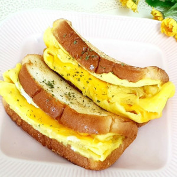
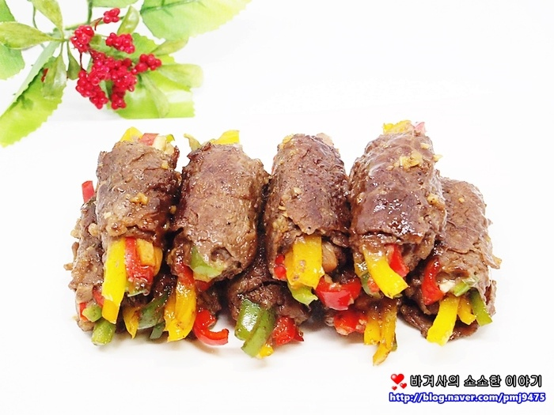
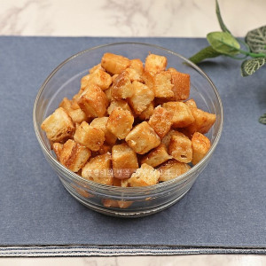
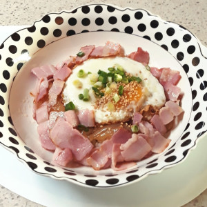

레시피 제목
비건종류
레시피 작성 부분
완성사진
  
요리후기 댓글수
| 원두는참지않아
2020-12-24 20:09:07
애들이 진짜 맛있데요 7살 10살인데 이제까지 먹은 것 중에 젤 맛있데요 에어프라이어로 치킨 곧잘 해줬었는데 앞으로는 이렇게만 해달라네요 후기도 처음 써봅니다ㅎㅎㅎ 시켜먹는 치킨보다 맛있데요 다른 레시피로 닭을 삶았어요 월계수잎 넣고 맛술 생강 넣어 삶았어요 저는 대파가 없어서 물기 없을까바 물 종이컵으로 반 정도 넣었고 씨 뺀 청량고추 하나 넣고 졸였어요 이거 쓰는데도 와와 하며 먹네요 정말 레시피 감사드려요 |
| 빛과소금찬양
2020-11-12 22:24:29
아이들이 좋아하는 맛이에요 너무 맛있고 간단하고 좋았어요 또 해먹을 거랍니다 강추해요^♡^ |